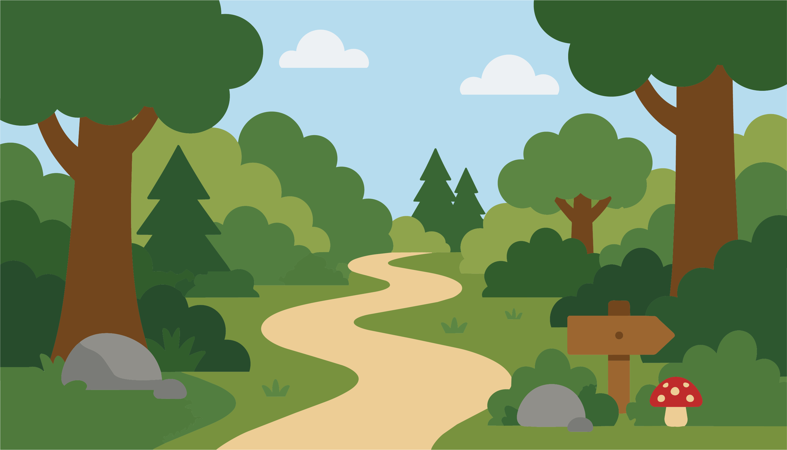
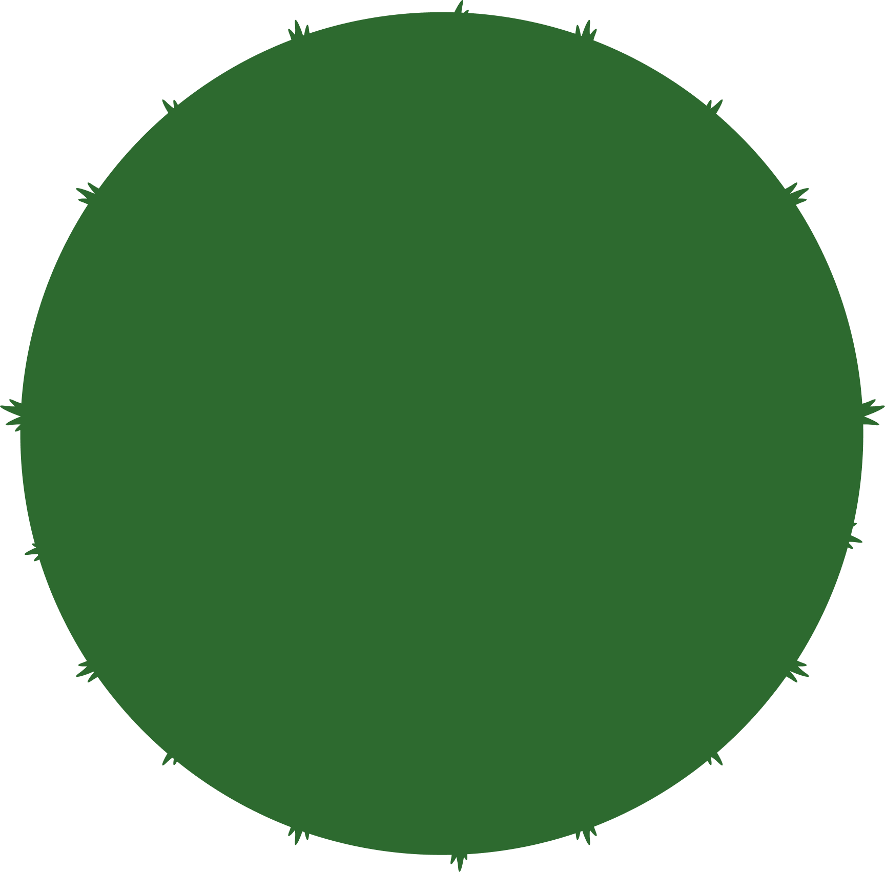
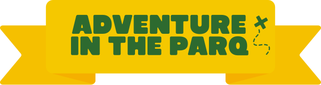
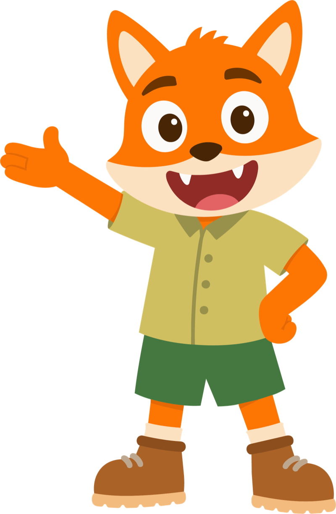
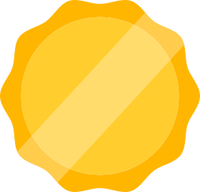
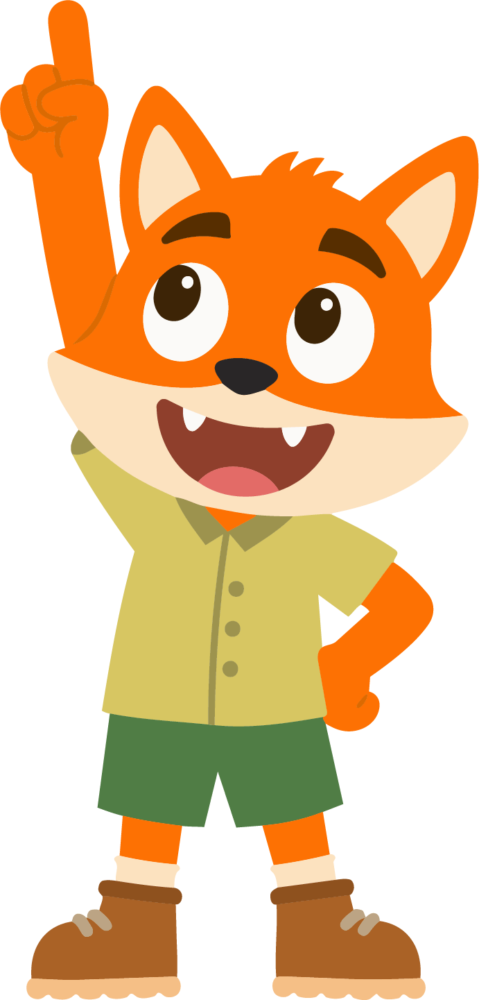
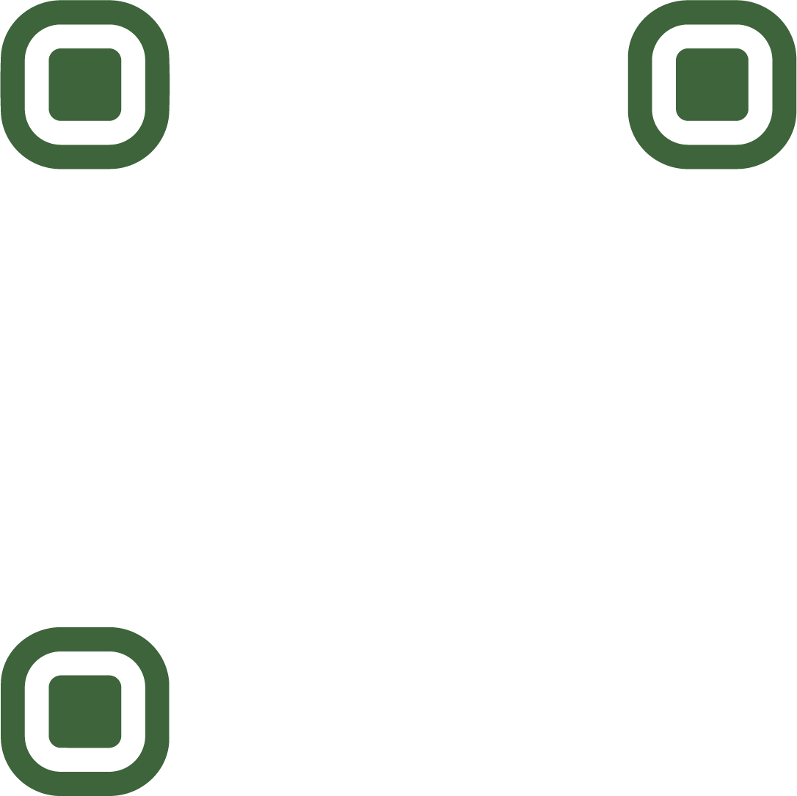
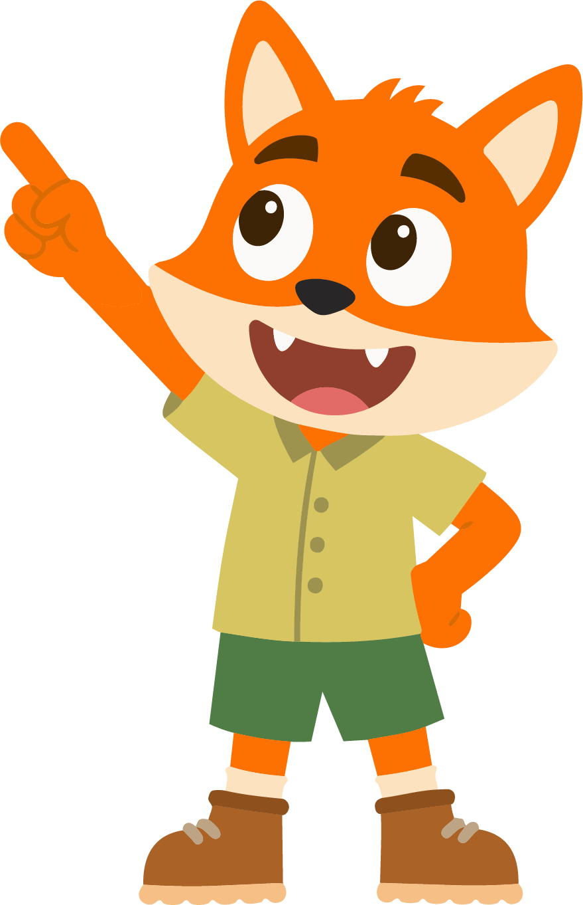
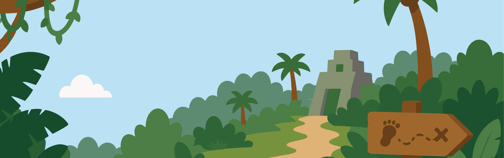
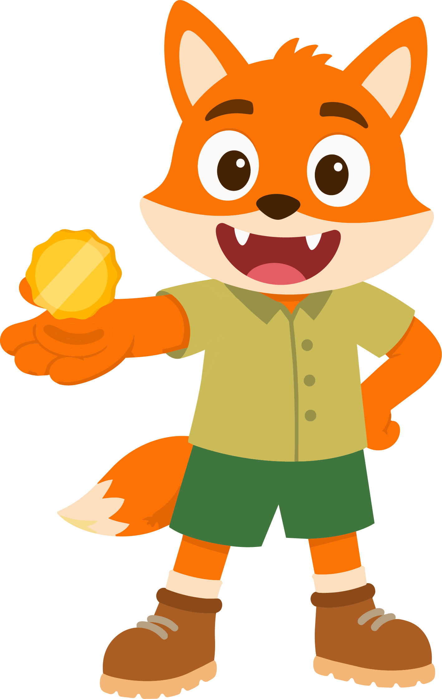

Jungle Expeditie
Jullie zijn ontdekkingsreizigers in de jungle. Help mij door de jungle te komen door te springen over rivieren en de kust veilig te houden. Maar pas op voor de gevaarlijke dieren... Ga je mee?



Camera starten…

Oh nee! Er stroomt hier een grote rivier, daar moeten we overheen! Spring 10 keer zo ver als je kan heen en weer!

Dat hebben jullie goed gedaan! We zijn aan de overkant.

Jullie zijn goed bezig! Ga door naar de volgende opdracht en help Finn verder in de jungle!




Wauw, het is gelukt! We zijn veilig door de jungle gekomen. Zonder jullie hulp had ik dit niet kunnen doen. Ik ben zo trots op jullie! Hier, een medaille als beloning. Geef hem een mooie plek, en tot het volgende avontuur!